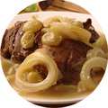

Рецепты
Вернуться к списку новостей
18 августа 2014г.
Основные достоинства каши состоит в том, что после тепловой обработки содержащийся в крупах белок хорошо усваивается организмом. Кроме того, в крупах содержится много углеводов. Все это делает их хорошим источником энергии для организма:
- Для того, чтобы каша получилась вкусной, крупу нужно перебрать и промыть. При переборке, например, пшена его рассыпают тонким слоем. Берут палочку, обматывают кончик ватой и слегка смачивают, чтобы к ней приставали находящиеся в крупе посторонние вкрапления.
- Рис, пшено и перловую крупу лучше мыть сначала теплой водой (40-50° С), а затем горячей (60-70° С), ячневую — только чуть теплой. Манную, мелкую полтавскую крупу и «Геркулес» не промывают.
- Для приготовления рассыпчатой гречневой и пшенной каши крупу немного поджаривают. Крупы перед готовкой лучше замачивать на несколько часов или даже на ночь, чтобы сократить время приготовления каши. Чем меньше крупа подвергается тепловой обработке, тем больше полезных веществ в ней сохраняется.
Основные достоинства

Произвольно нарезаем филе цыпленка. Измельчаем мясо в блендере. Обжариваем фундук на сухой сковороде. Очищаем картофель и яблоки от кожуры. Удаляем сердцевину у яблок. Нарезаем кубиком. Выкладываем на фольгу. Добавляем сливочное масло и сахар. Заворачиваем. Очищаем фундук с помощью сита. Измельчаем фундук в блендере. Ставим яблоки в духовку на 15-20 минут при температуре 180 градусов.